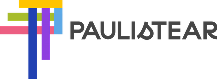

Base industrial
Paulista possui uma tradição industrial sólida, criando demandas reais para inovação aberta e oportunidades de parceria entre empresas e startups.

Faça parteConectando startups, universidades, indústrias e capital para acelerar o desenvolvimento sustentável do nosso município.
O Paulistear é o Núcleo de Inovação de Paulista, criado para conectar os diferentes atores do ecossistema local e transformar conhecimento, tecnologia e conexões em oportunidades para o desenvolvimento sustentável do município.
Aqui, governo, academia, empresas e sociedade civiltrabalham de forma integrada para aproximar conhecimento e mercado, estimular a inovação e fortalecer o ambiente de negócios de Paulista.
Potencializar conhecimento e conexões com inovação para o desenvolvimento sustentável de Paulista.
Paulista reúne ativos estratégicos que podem impulsionar novos negócios, projetos de inovação e conexões entre empresas, academia, governo e investidores.
Paulista possui uma tradição industrial sólida, criando demandas reais para inovação aberta e oportunidades de parceria entre empresas e startups.
O município conta com instituições de ensino superior, Instituto Federal, Sistema S e laboratórios de pesquisa, formando uma rede de conhecimento e desenvolvimento tecnológico.
Projetos em andamento incluem a implantação de Centro de Inovação, Instituto de Ciência e Tecnologia e Parques Tecnológicos.
Inserido na Região Metropolitana do Recife, Paulista possui conexão estratégica com outros polos de inovação, empresas e fundos de investimento de Pernambuco.
O Paulistear atua em diferentes frentes para fortalecer o ecossistema de inovação de Paulista.
6 eixos estratégicosEstruturar e ativar ambientes de inovação no território.
Criar oportunidades para desenvolver ideias, negócios e soluções.
Conectar conhecimento acadêmico aos desafios reais das empresas.
Facilitar o acesso às políticas e mecanismos de apoio à inovação.
Aproximar negócios e projetos de fontes de financiamento.
Fortalecer a governança e manter o ecossistema conectado.
O Paulistear conecta diferentes perfis a oportunidades de inovação, negócios, conhecimento e investimento.
Mentorias, incubação, espaços makers e conexão com desafios reais de empresas.
Conexão com inovação aberta, soluções para gargalos operacionais e parcerias com instituições de ciência e tecnologia.
Oportunidades para aplicar pesquisas e projetos em desafios reais do território.
Acesso a oportunidades, startups e projetos do ecossistema, além da possibilidade de participar da rede de inovação.
Conheça os espaços, instituições e organizações que fazem parte do ecossistema de inovação de Paulista. Clique nos pontos para conhecer cada ativo.
Painel atualizado
—
| Tipo | Oportunidade | Data | Status |
|---|
Quer participar, desenvolver um projeto, apresentar um desafio, buscar parceiros ou conhecer oportunidades de inovação em Paulista?
Cadastre-se e conecte-se à rede.
Escolha seu perfil e interesse: mostramos para qual área da equipe seu cadastro será enviado.
Acesse informações sobre fontes de financiamento, editais de fomento e oportunidades de investimento para negócios e projetos de inovação.
O Paulistear conecta os diferentes atores da Quádrupla Hélice para fortalecer a governança e construir soluções colaborativas para o desenvolvimento de Paulista.
Articula políticas públicas, incentivos e desburocratização para quem inova.
Comitê · assentos a definirProduz conhecimento, pesquisa aplicada e forma os talentos do território.
Comitê · assentos a definirTraz demandas reais, investimento e espaço para inovação aberta.
Comitê · assentos a definirAponta os desafios da cidade e participa da construção das soluções.
Comitê · assentos a definirComitê da Quádrupla HéliceIntegrantes em breve. Selecione um ator para ver seu papel.
Receba novidades sobre eventos, programas, editais, oportunidades e iniciativas de inovação em Paulista.